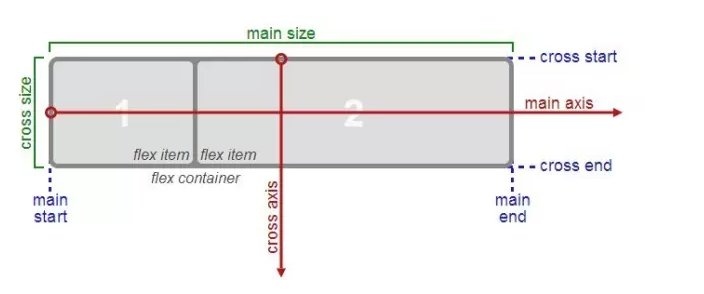
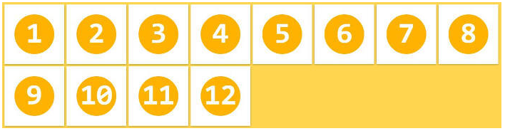

弹性盒子模型（The Flexible Box Module）,又叫Flexbox，意为“弹性布局”，旨在通过弹性的方式来对齐和分布容器中内容的空间，使其能适应不同屏幕，为盒装模型提供最大的灵活性。
FlexBox布局更多的用到移动端，PC端除了盒子模型布局，也支持FlexBox布局 , FlexBox布局将会是成为未来开发的主流技术，将在移动端体现的最明显。
浮动布局
各种机型屏幕的适配
水平和垂直居中
自动分配宽度
......
主轴
侧轴（交叉轴）

容器默认存在两根轴：水平的主轴（main axis）和垂直的交叉轴（cross axis）。主轴的开始位置（与边框的交叉点）叫做main start，结束位置叫做main end；交叉轴的开始位置叫做cross start，结束位置叫做cross end。
项目默认沿主轴排列，单个项目占据的主轴空间叫做main size，占据的交叉轴空间叫做cross size。
结论：主轴的方向 与 父容器中的排列方向 一致
row | row-reverse | column | column-reverse
该属性：规定了主轴的方向（父容器中的排列方向）。
row：主轴为水平方向，起点在左端。
row-reverse：主轴为水平方向，起点在右端。
column(默认值)：主轴为垂直方向，起点在上沿。
column-reverse：主轴为垂直方向，起点在下沿。
column-reverse：主轴为垂直方向，起点在下沿。

案例：
将上面的flexDirection的属性修改成：column后，效果为：
将上面的flexDirection的属性修改成：row后，效果为：
flex-start | flex-end | center | space-between | space-around
规定：子item在主轴方向的对齐方式
flex-start(默认值)：伸缩项目向一行的起始位置靠齐。
flex-end：伸缩项目向一行的结束位置靠齐。
center：伸缩项目向一行的中间位置靠齐。
space-between：两端对齐，项目之间的间隔都相等。
space-around：伸缩项目会平均地分布在行里，两端保留一半的空间。
下图灰色为背景,主轴方向为水平，侧轴方向为垂直：

案例：
将上面的justifyContent的属性修改成：flex-end后，效果为：
将上面的justifyContent的属性修改成：space-between后，效果为：

flex-start | flex-end | center | baseline | stretch
规定：子item在侧轴方向的对齐方式
flex-start：交叉轴的起点对齐。
flex-end：交叉轴的终点对齐 。
center：交叉轴的中点对齐。
baseline：项目的第一行文字的基线对齐。
stretch（默认值）：如果项目未设置高度或设为auto，将占满整个容器的高度。
下图灰色为背景，主轴方向是水平，侧轴方向是垂直

将上面的alignItems的属性修改成：center后，效果为：
将上面的alignItems的属性修改成：flex-end后，效果为：
nowrap | wrap | wrap-reverse
默认情况下，项目都排在一条线（又称”轴线”）上。flex-wrap属性定义，如果一条轴线排不下，如何换行。

nowrap(默认值)：不换行。

wrap：换行，第一行在上方。

wrap-reverse：换行，第一行在下方。（和wrap相反）

没设计换行
换行
flex是 “flex-grow”、“flex-shrink”和“flex-basis”三个属性的缩写 , 参数一：定义项目的放大比例；参数二：定义了项目的缩小比例；参数三：定义了在分配多余空间之前，项目占据的主轴空间。其中第二个和第三个参数（flex-shrink、flex-basis）是可选参数。
flex默认值为“0 1 auto ”。

案例：
权重分别：1，1，1
权重分别：1，4，1
align-self属性允许单个item有与其他item不一样的对齐方式
align-self: auto | flex-start | flex-end | center | baseline | stretch;
1 什么是less?
Less 是一门 CSS 预处理语言，使用了类似CSS的语法，为CSS赋予了动态语言的特征。它扩展了 CSS 语言，增加了变量、Mixin(混合)、嵌套、函数和运算等特性，使 CSS 更易维护和扩展。此外，Less 可以运行在 Node 或浏览器端。
Boostrap的框架就是使用less和sass开发的，less类似于javascript , 作为css的一种扩展。
2 less的特点？
作为CSS的一种扩展，less不仅向下兼容CSS的语法，而且连新增的特性也是使用CSS语法。这样的设置使得学习less非常轻松，而且你可以在任何时候回退到CSS。
LESS中文网 : http://www.lesscss.cn/
github : https://github.com/less/less.js
方式一：客户端直接调用
<link rel="stylesheet/less" href="less/less.less">
<!--用于编译LESS的-->
<script type="text/javascript" src="js/less.min.js"></script>
注意：必须在服务器环境中才能生效，动态编译注入虚拟DOM或者内存中，类似ajax。
方式二：预编译（提前编译, 推荐）
1.在代码编辑器中，按照LESS的语法规则写好LESS文件；
2.使用编译工具把.less文件编译成.css文件；
3.把编译后的css文件引入到页面即可。
编译工具：Koala
less 官网： http://lesscss.org//
github: https://github.com/less/less.js
<!--引入less库-->
<script src="js/less.js"></script>
<!--引入less样式文件-->
<link rel="stylesheet/less" href="less/index.less">
执行的效果：
注意：必须在服务器环境中才能生效
webstrom自带了一个本地服务器
1.WAMP: windows + apache + MySQL + PHP
2.LAMP: Linux + apache + MySQL + PHP (推荐)
3.MAMP: Mac + apache + MySQL + PHP
单独定义一系列通用的样式，然后在需要的时候去调用。所以在做全局样式调整的时候我们可能只需要修改几行代码就可以了。
// JS中定义变量
var name = '张三';
// LESS中定义变量
@color:red;
h1{
color: @color;
}
格式：@变量名:值
@import url('./base.less');
@import url('./base');
@import "./base";
@import "base";
方式一 : 不常用，因为要依赖服务器环境
1.在代码编辑器中，按照LESS的语法规则写好LESS文件；
2.使用编译工具把.less文件编译成.css文件；
3.把编译后的css文件引入到页面即可。
官网：http://koala-app.com/index-zh.html
下载需要翻墙
第一步：
选中less文件夹
第二步：
应该点击Reload , 而不是Rename , 下图框错了
第三步：
bianliang.less文件的内容
//1.定义变量
@color:white;
@size:20px;
@bgColor:red;
//2.使用变量
div,p{
color: @color;
font-size: @size;
background-color: @bgColor;
}
在一个选择器中嵌套另一个选择器来实现继承，这样很大程度上减少了代码量，并且代码看起来更加清晰。
注意：嵌套一般情况下，不要超过3层
//1.定义变量
@color:red;
@width:50px;
@height:50px;
@bgColor:green;
//2.嵌套案例
.box{
width: @width*3;
height: @height*3;
background-color:@bgColor;
.test1{
width: @width + 20px;
height: @height + 20px;
background-color: white;
.test3{
background-color: @color;
}
}
}
运算提供了加、减、乘、除操作，其他复杂的运算交给函数；通常我们可以做属性值和颜色的运算，这样就可以实现属性值之间的复杂关系。
注意：运算符与值之间必须以空格分开 ; 在运算的时候，只要有一个有单位就行
@width:300px;
@height:100px;
div{
//width: @width - 100;//可以
//width: @width - 200px ;//可以
//width: @width * 2;//可以
//width: @width * 3px;//可以
width: 500 - @width; //可以
height: @height;
background-color: red;
}
@width:300px;
@height:100px;
@color:green;
//混合
.createRadius(){
border-radius: 30px;
}
div{
width: 500 - @width; //可以
height: @height;
background-color: red;
//引用
.createRadius();
}
p{
width: @width *2 ;
height: @height *2 ;
background-color: blue;
//引用
.createRadius();
}
LESS中的函数 - 映射了JavaScript函数代码，如果你愿意的话，可以操纵属性值。
比如：鼠标移上 , 透明度降50%。
需要查找的时候，直接查文档就可以了。http://lesscss.cn/functions/#color-operations-fade
hsla 颜色 : http://www.cnblogs.com/zhoushengxiu/p/5710691.html
比如 , 颜色操作函数：
saturate(@color, 10%); // 饱和度增加 10%
desaturate(@color, 10%); // 饱和度降低 10%
lighten(@color, 10%); // 亮度增加 10%
darken(@color, 10%); // 亮度降低 10%
fadein(@color, 10%); // 透明度增加 10%
fadeout(@color, 10%); // 透明度降低 10%
fade(@color, 50%); // 设定透明度为 50%
spin(@color, 10); // 色相值增加 10
……
类似js中的if else判断，只有模式名称匹配成功才能起作用。
注意：匹配模式中,定义的模式名称都是一样的，只是参数不一样，调用的时候只需选择对应的参数就可以了。
@width:100px;
@height:30px;
.radius(@Radius:30px){
border-radius: @Radius;
}
/*参数一：模式名称 ； 参数二：变量*/
.radius(l_t,@Radius:30px){
border-top-left-radius: @Radius;
}
.radius(l_b,@Radius:30px){
border-bottom-left-radius: @Radius;
}
.radius(r_t,@Radius:30px){
border-top-right-radius: @Radius;
}
.radius(r_b,@Radius:30px){
border-bottom-right-radius: @Radius;
}
div{
width: @width; //可以
height: @height;
background-color: red;
margin: @height;
}
/*四角圆*/
.test1{
.radius(10px);
}
.test2{
.radius(l_t,10px);
}
.test3{
.radius(l_b,10px);
}
.test4{
.radius(r_b,10px);
}
随着移动端的愈加火爆，目前很多HTML5的框架都在支持移动方向，比如：Vue.js，zepto.js，React Native等等。
Zepto 是一个轻量级的针对现代高级浏览器的 JavaScript 库， 它与jquery 有着类似的api。 如果你会用 jquery，那么你也会用 zepto。
Zepto的设计目的是提供 jQuery 的类似的API，但并不是100%覆盖 jQuery 。Zepto设计的目的是有一个5-10k的通用库、下载并快速执行、有一个熟悉通用的API，所以你能把你主要的精力放到应用开发上。
思考：jQuery和Zepto.js的区别在哪里？
（1）jQuery更多是在PC端被应用，因此，考虑了很多低级浏览器的的兼容性问题；而Zepto.js则是直接抛弃了低级浏览器的适配问题，显得很轻盈；
（2）Zepto.js在移动端被运用的更加广泛；
（3）jQuery的底层是通过DOM来实现效果的， zepto.js 是用css3 来实现的；
（4）Zepto.js可以说是阉割版本的jQuery。
( 5 ) zepto与jquery主要的区别是在模块上的区别：http://www.css88.com//doc//zeptojs_api//
注意：zepto上面的动画，不要加太多， 因为动画很耗性能，加多了会很卡，特别是一些webview开发；
中文版：http://www.css88.com//doc//zeptojs_api//
github : https://github.com/madrobby/zepto
Safari 6+
Chrome 30+
Firefox 24+
iOS 5+ Safari
Android 2.3+ Browser
Internet Explorer 10+
例如：点击改颜色
<!DOCTYPE html>
<html lang="en">
<head>
<meta charset="UTF-8">
<title>Title</title>
<style>
div{
width: 200px;
height: 200px;
background-color: red;
}
</style>
</head>
<body>
<button id="btn">点击改颜色</button>
<div class="box"></div>
<!--引入jq-->
<!--<script src="js/jquery-3.2.0.js"></script>-->
<!--引入zepto-->
<script src="js/zepto.min.js"></script>
<script>
$(function () {
$('#btn').on('click',function () {
$('.box').css({
backgroundColor:'green',
})
})
})
</script>
</body>
</html>
注意：zepto与jquery主要的区别是在模块上的区别：http://www.css88.com//doc//zeptojs_api//
选择器$( ‘ div:eq(1) ‘ ) : http://www.w3school.com.cn/jquery/jquery_ref_selectors.asp
例子：点击改第二个颜色
<!DOCTYPE html>
<html lang="en">
<head>
<meta charset="UTF-8">
<title>Title</title>
<style>
div{
width: 200px;
height: 200px;
background-color: red;
margin: 10px;
}
</style>
</head>
<body>
<button id="btn">点击改第二个颜色</button>
<div >1</div>
<div >2</div>
<!--引入jq-->
<!--<script src="js/jquery-3.2.0.js"></script>-->
<!--引入zepto-->
<script src="js/zepto.min.js"></script>
<!--selector要放在zepto后面-->
<script src="js/selector.js"></script>
<script>
$(function () {
/*点击改第二个颜色*/
$('#btn').on('click',function () {
$('div:eq(1)').css({
backgroundColor:'green',
})
})
})
</script>
</body>
</html>
例子：点击改变宽度
<!DOCTYPE html>
<html lang="en">
<head>
<meta charset="UTF-8">
<title>Title</title>
<style>
div{
width: 500px;
height: 200px;
background-color: red;
margin: 10px;
}
</style>
</head>
<body>
<button id="btn">点击改改变宽度</button>
<div class="box">1</div>
<!--引入jq-->
<!--<script src="js/jquery-3.2.0.js"></script>-->
<!--引入zepto-->
<script src="js/zepto.min.js"></script>
<script src="js/fx.js"></script>
<script>
$(function () {
$('#btn').on('click',function () {
$('.box').animate({
width:'300px',
})
})
})
</script>
</body>
</html>
toggle的用法 : http://www.w3school.com.cn/jquery/effect_toggle.asp
<!DOCTYPE html>
<html lang="en">
<head>
<meta charset="UTF-8">
<meta name="viewport"
content="width=device-width, user-scalable=no, initial-scale=1.0, maximum-scale=1.0, minimum-scale=1.0">
<title>Title</title>
<style>
div{
width: 200px;
height: 200px;
background-color: red;
}
</style>
</head>
<body>
<button id="btn">来回切换隐藏</button>
<div class="box"></div>
<!--<script src="js/jquery-3.2.0.js"></script>-->
<script src="js/zepto.min.js"></script>
<script src="js/fx.js"></script>
<script src="js/fx_methods.js"></script>
<script>
$(function () {
$('#btn').on('click',function () {
$('.box').toggle(1000);
})
})
</script>
</body>
</html>
tap 只作用在移动端，PC端是无效的;
click 在pc端和移动端都是ok的;
但是我们在移动端要用tap，因为 tap 比 click 快200-300ms。
例子，点击改变颜色：
<!DOCTYPE html>
<html lang="en">
<head>
<meta charset="UTF-8">
<meta name="viewport"
content="width=device-width, user-scalable=no, initial-scale=1.0, maximum-scale=1.0, minimum-scale=1.0">
<title>Title</title>
<style>
div{
width: 200px;
height: 200px;
background-color: red;
}
</style>
</head>
<body>
<button id="btn">点击修改颜色</button>
<div class="box"></div>
<!--<script src="js/jquery-3.2.0.js"></script>-->
<script src="js/zepto.min.js"></script>
<script src="js/touch.js"></script>
<script>
$(function () {
/**
$('#btn').on('click',function () {
$('.box').css({
backgroundColor:'green',
})
})
*/
$('#btn').tap(function () {
$('.box').css({
backgroundColor:'green',
})
});
})
</script>
</body>
</html>
注意： 如果想在移动设备上使用swipe事件，先要清除系统默认的手势事件
<!DOCTYPE html>
<html lang="en">
<head>
<meta charset="UTF-8">
<meta name="viewport"
content="width=device-width, user-scalable=no, initial-scale=1.0, maximum-scale=1.0, minimum-scale=1.0">
<title>Title</title>
<style>
div{
width: 100px;
height: 100px;
background-color: red;
position: absolute;
left: 30px;
top: 30px;
}
/*清楚系统默认的事件*/
*{
touch-action: none;
}
</style>
</head>
<body>
<div class="box"></div>
<script src="js/zepto.min.js"></script>
<script src="js/touch.js"></script>
<script src="js/fx.js"></script>
<script>
$(function () {
/**
*
$('.box').swipe(function () {
console.log('滑动了')
});
$('.box').swipeLeft(function () {
console.log('向左滑动了')
});
$('.box').swipeRight(function () {
console.log('向右滑动了')
});
$('.box').swipeUp(function () {
console.log('向上滑动了')
});
$('.box').swipeDown(function () {
console.log('向下滑动了')
});
*/
$('.box').swipeLeft(function () {
$(this).animate({
left:0,
})
});
$('.box').swipeRight(function () {
$(this).animate({
left:'200px',
})
});
$('.box').swipeUp(function () {
$(this).animate({
top:0,
})
});
$('.box').swipeDown(function () {
$(this).animate({
top:'200px',
})
});
})
</script>
</body>
</html>
<!--引入zepto-->
<script src="js/zepto.min.js"></script>
<!--引入touch-->
<script src="js/touch.js"></script>
<!DOCTYPE html>
<html lang="en">
<head>
<meta charset="UTF-8">
<!--
视口：兼容移动
-->
<meta name="viewport"
content="width=device-width, user-scalable=no, initial-scale=1.0, maximum-scale=1.0, minimum-scale=1.0">
<!--
告诉ie浏览器使用最新的解析器解析
-->
<meta http-equiv="X-UA-Compatible" content="IE=edge">
<title>Title</title>
</head>
<body>
<div class="box">
<!--头部-->
<ul class="header">
<li class="current">新闻</li>
<li>科技</li>
</ul>
<!--线条-->
<span class="line"></span>
<!--内容-->
<div class="list">
<div class="list1">
<ul>
<li>新闻内容新闻内容</li>
<li>新闻内容新闻内容</li>
<li>新闻内容新闻内容</li>
<li>新闻内容新闻内容</li>
<li>新闻内容新闻内容</li>
<li>新闻内容新闻内容</li>
</ul>
<a href="javascript:;">查看更多...</a>
</div>
<div class="list2">
<ul>
<li>科技内容新闻内容</li>
<li>科技内容新闻内容</li>
<li>科技内容新闻内容</li>
<li>科技内容新闻内容</li>
<li>科技内容新闻内容</li>
<li>科技内容新闻内容</li>
</ul>
<a href="javascript:;">查看更多...</a>
</div>
</div>
</div>
<!--引入zepto-->
<script src="js/zepto.min.js"></script>
<!--引入touch-->
<script src="js/touch.js"></script>
</body>
</html>
执行的效果：
*{
.....
/*清除系统的触摸事件*/
touch-action: none;
/*盒子大小的计算方式*/
box-sizing: border-box;
}
/*box里面的盒子要移动，移动要用到定位*/
.box{
position: relative;
}
1.list 整个列表的样式
2.列表中ul 和 li的样式
3.查看更多a标签样式
$(function () {
//1.头部的点击事件
$('.header li').tap(function () {
//2.拿到点击的索引
var index=$(this).index();
alert(index);
});
})
1.文字的切换
$(function () {
//1.头部的点击事件
$('.header li').tap(function () {
//2.拿到点击的索引
var index=$(this).index();
// alert(index);
$(this).addClass('current')
/*同级节点，清除样式*/
.siblings().removeClass('current');
});
})
2.线条的移动
$('.line').css({
transform:'translateX('+ index * 100 +'%)',
transition:'all 1s linear',
})
3.内容的移动
$('.list').css({
transform:'translateX('+ -index * 50 +'%)',
transition:'all 0.35 linear',
})
//2.监听页面的滑动
$('.list').swipeLeft(function () {
//2.拿到点击的索引
var index=1;
// alert(index);
//3.文字改色
$('.header li').addClass('current')
/*同级节点，清除样式*/
.siblings().removeClass('current');
//4.线条移动
$('.line').css({
transform:'translateX('+ index * 100 +'%)',
transition:'all 0.35 linear',
})
//5.内容移动
$('.list').css({
transform:'translateX('+ -index * 50 +'%)',
transition:'all 0.35 linear',
})
})
滚滚屏
对应的样式：
通过设计overflow：hidden 来隐藏其它屏幕和滚动条
github: https://github.com/jquery/jquery-mousewheel
// using on
$('#my_elem').on('mousewheel', function(event) {
console.log(event.deltaX, event.deltaY, event.deltaFactor);
});
// using the event helper
$('#my_elem').mousewheel(function(event) {
console.log(event.deltaX, event.deltaY, event.deltaFactor);
});
deltaX: 在水平方向滚动的增量，默认是 0
deltaY: 在垂直方向滚动的增量; 增量正数向上滚动，增量负数 向下滚动
deltaFactor: 滚动的帧率，默认是100
//1.监听window的滚动
$(function () {
$(window).mousewheel(function (event) {
//监听屏幕的上下滚动：1 是向上，-1是向下
console.log(event.deltaY);
})
})
1.头部左边布局和样式
执行效果：
2.内容居中
1.布局搭建
执行效果：
2.圆点的实现
执行的效果：
3.默认选中第一个：
1.布局的搭建
<!--固定在底部的界面-->
<footer class="footer">
<span class="footer-left">
©Tencent
</span>
<ul class="footer-right">
<li><a href="javascript:;">2.0版官网 <span>|</span></a></li>
<li><a href="javascript:;">历史版本下载 <span>|</span></a></li>
<li><a href="javascript:;">PC 版 <span>|</span></a></li>
<li><a href="javascript:;">论坛 <span>|</span></a></li>
<li><a href="javascript:;">微博</a></li>
</ul>
</footer>
2.布局对应的样式
执行的效果：
3.底部的样式
执行的效果：
animation: myAnimate 1s infinite alternate linear
myAnimate 自定义动画
1s 动画所花费的时间
infinite 规定动画应该无限次播放
alternate 动画应该轮流反向播放
linear 动画的曲线（匀速）
/*滚动的指示器*/
.scroll{
....
/*ccs3动画*/
animation: unAndDowm 0.65s infinite alternate;
}
/*实现自定义动画*/
@keyframes unAndDowm {
0%{transform:translateY(0px)}
100%{transform:translateY(10px)}
}
切换gps选中的样式
切换选项卡
linear-gradient
线性渐变的方向 默认从上到下
语法：
background: linear-gradient(direction, color-stop1, color-stop2, ...);
direction ：渐变开始的角度, 默认是180deg
color-stop1 ： 渐变的过渡的颜色 （ 可以写多个，还可以在其后添加百分比 ）
background 简写属性在一个声明中设置所有的背景属性。
可以设置如下属性：
background: linear-gradient(0deg, #395ecb 0%, #3657be 35%, #242161 75%, #1a0531 100%);
添加光斑：
background: url(../images/page1_glow.png) no-repeat center -60px ,
linear-gradient(0deg, #395ecb 0%, #3657be 35%, #242161 75%, #1a0531 100%);
//page2
background: linear-gradient(0deg, #41b93e 0%, #3b9e3c 35%, #274535 75%, #190530 100%);
//page3
background: linear-gradient(0deg, #395ecb 0%, #3657be 35%, #242161 75%, #1a0531 100%);
//page4
background: url(../images/page4_glow.png) no-repeat center 200px, linear-gradient(0deg, #ff9f42 0%, #ed923d 35%, #6d3816 75%, #2e0b04 100%);
//page5
background: url(../images/page5_glow.png) no-repeat center -300px,linear-gradient(0deg, #d74d53 0%, #c44655 35%, #4c184c 75%, #110145 100%);
使用timeout进行节流 , 让最后一次滚动有效 ;
在pc端节流一般控制在500毫秒。
执行效果：
1.布局搭建
执行效果：
2.布局中间的内容
执行的效果：
3.环绕布局
/*声明当前文件的编码格式*/
@charset "UTF-8";
第一步：
第二步：
选中项目中的css文件夹, 点击确认后会弹出一个是否允许的权限提示，点击允许
第三步：
选中要关联的文件
第四步：
按回车键即可